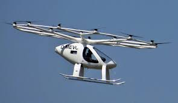

Parcours
Baccalauréat STI2D (Sciences et Technologies de l'Industrie et du Développement Durable)
1ère et Terminale
Lycée Clément Ader, Tournant, 2020/2022
BTS SIO (Services Informatiques aux Organisations)
1ère et 2ème années
Lycée Léonard de vinci, Melun, 2022/2024
Stages
Application de Gestion de Congés
Une application web permettant aux employés de demander des congés, aux gestionnaires de les approuver ou rejeter, et aux ressources humaines de gérer le suivi des congés.
Technologies utilisées : HTML, CSS, php, symfony.
Création d'un site web pour un électricien
Stage pratique réalisé dans le cadre de ma formation BTS SIO.
J'ai eu l'opportunité de concevoir et développer un site web pour un électricien indépendant. Le site devait présenter ses services, ses réalisations, ainsi que des informations de contact.
Technologies utilisées : HTML, CSS, JavaScript, php.
acces au site
Veille Technologique
Veille technologique sur le Volocopter
Évolution de Volocopter
- Conception et Prototype Initial (2011-2013): Fondée en 2011 en Allemagne, l'équipe de Volocopter commence à concevoir et à développer un prototype de véhicule aérien à décollage et atterrissage vertical (eVTOL), le premier vole a lieu en 2013, jetant ainsi les bases de sa vision pour une mobilité urbaine aérienne et durable.
- Développement Technologique (2013-2017): Au cours des années suivantes, l'équipe de Volocopter se concentre sur l'amélioration de la technologie de son véhicule, en mettant l'accent sur la sécurité, l'efficacité énergétique et la fiabilité. Des progrès significatifs sont réalisés dans le développement de systèmes de propulsion électrique, de batteries et de logiciels de vol autonomes, se qui améne en 2016 a effectuer le premier vole avec des perssone a l'inérieure.
- Tests en Vol et Validation (2017-2019): Volocopter mène de nombreux tests en vol pour valider les performances de son véhicule dans différentes conditions. Ces tests sont cruciaux pour affiner le design, identifier et résoudre les problèmes potentiels, et démontrer la faisabilité de la technologie aux régulateurs, aux investisseurs et au grand public, en 2019 approbation de l’organisme de conception.
- Partenariats Stratégiques (2019-2020): Alors que la technologie Volocopter prend forme, l'entreprise établit des partenariats stratégiques avec des entreprises du secteur de la technologie, des transports et de l'aviation. Ces partenariats apportent un soutien financier, une expertise technique et des opportunités de développement commercial, approbation de l’organisation de production, prototype grandeur nature du premier vol, définition des moyens de conformité.
- Certification et Réglementation (2020-2022): L'obtention de la certification des autorités de l'aviation civile devient une priorité pour Volocopter. L'entreprise travaille en étroite collaboration avec les régulateurs pour répondre aux exigences en matière de sécurité et de réglementation aérienne.
- Démonstrations Publiques et Visibilité Médiatique (2022-2023): Volocopter réalise plusieurs démonstrations publiques impressionnantes pour présenter son véhicule au grand public. Ces événements attirent une attention médiatique considérable et contribuent à sensibiliser le public à la possibilité d'une mobilité aérienne urbaine.
- Vers la Commercialisation (2023-présent): Actuellement, Volocopter se trouve sur la voie de la commercialisation de sa technologie. Des projets pilotes sont en cours dans plusieurs villes à travers le monde, et l'entreprise travaille avec des partenaires pour développer des solutions de mobilité aérienne urbaine intégrées et durables.

Le Volocopter est une technologie de pointe dans le domaine des véhicules aériens électriques à décollage et atterrissage vertical (eVTOL). Voici une veille technologique récente sur le Volocopter :
- Certification et réglementation: Le Volocopter a progressé dans ses efforts pour obtenir la certification nécessaire pour des vols commerciaux. Les réglementations des autorités de l'aviation civile sont un aspect crucial pour la commercialisation des eVTOL, et le Volocopter travaille en étroite collaboration avec les régulateurs pour répondre à ces exigences.
- Partenariats et collaborations: Volocopter a établi plusieurs partenariats clés avec des entreprises et des municipalités pour explorer les possibilités d'intégration de ses véhicules dans les infrastructures urbaines. Des collaborations avec des sociétés de services de mobilité, des aéroports et des entreprises de développement immobilier sont en cours pour explorer les cas d'utilisation potentiels.
- Tests et démonstrations: Des tests en vol et des démonstrations publiques continuent d'être effectués pour valider la fiabilité et les performances du Volocopter. Des vidéos de vols d'essai sont souvent partagées pour montrer les progrès réalisés dans le développement de cette technologie.
- Améliorations technologiques: Volocopter travaille sur des améliorations technologiques pour augmenter l'autonomie de vol, réduire le bruit et améliorer la sécurité. Cela comprend l'optimisation des batteries, l'amélioration de la conception aérodynamique et l'intégration de systèmes avancés de gestion de vol et d'évitement des collisions.
- Expérimentation dans divers domaines d'application: En plus du transport de passagers, Volocopter explore d'autres applications potentielles pour sa technologie, telles que la logistique urbaine, la surveillance aérienne et les opérations de secours en cas de catastrophe.
- Concurrence et marché: Le marché des eVTOL est de plus en plus concurrentiel, avec l'émergence de plusieurs autres acteurs. Volocopter continue de se démarquer en mettant l'accent sur la sécurité, la fiabilité et l'intégration harmonieuse dans les infrastructures urbaines.
- Investissements et financement: Le Volocopter a réussi à attirer d'importants investissements de la part de sociétés de capital-risque et d'entreprises du secteur de la technologie et de la mobilité. Ces investissements sont cruciaux pour soutenir la croissance et le développement continu de l'entreprise.
En résumé, le Volocopter progresse dans sa quête pour commercialiser une forme de transport aérien urbain innovante et respectueuse de l'environnement, mais il reste encore des défis à relever en termes de réglementation, de technologie et d'acceptation du marché.
Voir le site du projet volocopter Voir le wikipedia du projet volocopter